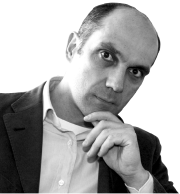
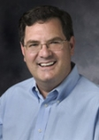
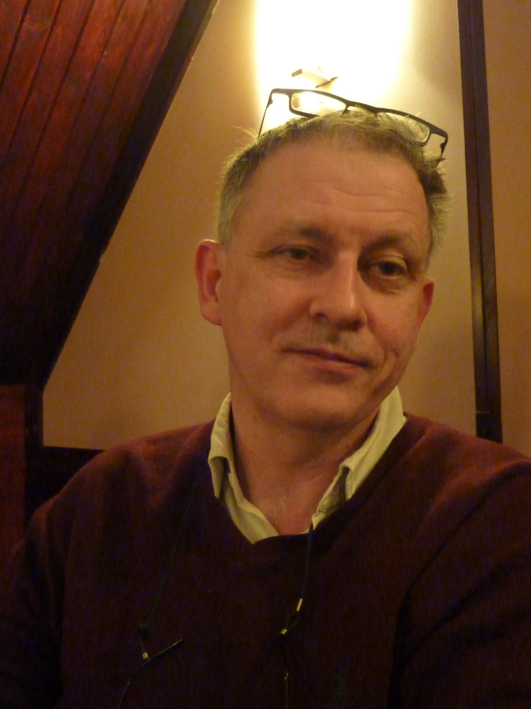

The Best and the Worst Things that Happened to Knowledge Capture with the Advent of the Semantic Web
The Semantic Web has changed the nature of the knowledge economy at all levels. In many ways, this has been a very positive change as knowledge is more pervasive, accessible, and cross-linked than ever before. But it has also impacted the reliability and usability of knowledge. How has the Semantic Web changed how knowledge is captured and managed? How has this affected the research agenda of our community? How has it impacted users? This panel of long-time knowledge acquisition and capture researchers will present their views on the best and worst things that the Semantic Web has done in changing the landscape of knowledge capture.
Panel participants:
- Yolanda Gil (Chair), USC Information Sciences Institute
- Enrico Motta, Open University
- Mark Musen, Stanford University
- Guus Schreiber, Free University of Amsterdam
Yolanda Gil (Chair), USC Information Sciences Institute

I am Principal Investigator and Project Leader of the Interactive Knowledge Capture research
group at USC's Information Sciences Institute (ISI). My research focuses on intelligent interfaces
for knowledge capture, which is a central topic in our projects concerning knowledge-based planning
and problem solving, information analysis and assessment of trust, semantic annotation tools, agent
and software choreography, and community-wide development of knowledge bases. A recent focus is assisting
scientists with large-scale applications through the design of workflows and their distributed execution.
Enrico Motta, Open University

My research spans a variety of aspects related to semantic technologies and knowledge engineering, including ontology engineering, semantic web, knowledge-intensive problem solving, interfaces to knowledge-based systems, question answering, intelligent data integration, semantic search, and foundational issues. Consistently with the ethos of the Knowledge Media Institute practically all my projects focus on concrete user-centric functionalities, developed through scalable solutions, which typically integrate semantic and other technologies, such as computational linguistics and machine learning.
Mark Musen, Stanford University

Dr. Musen conducts research related to intelligent systems, the Semantic Web, reusable ontologies and knowledge representations, and biomedical decision support. His long-standing work on a system known as Protégé has led to an open-source technology now used by thousands of developers around the world to build intelligent computer systems and new computer applications for e-science and the Semantic Web. He is known for his research on the application of intelligent computer systems to assist health-care workers in guideline-directed therapy and in management of clinical trials. He is principal investigator of the National Center for Biomedical Ontology, one of the seven National Centers for Biomedical Computing supported by the NIH Roadmap.
Guus Schreiber, Free University of Amsterdam

Guus Schreiber is a professor of Intelligent Information Systems at the Department of Computer Science department of the VU University Amsterdam. His research interests are mainly in knowledge and ontology engineering, with a special interest for applications in the field of cultural heritage. He was one of the key developers of the CommonKADS methodology. He acts as chair of W3C groups for Semantic Web standards such as RDF, OWL, SKOS and RDFa. His research group is involved a wide range of national and international research projects. He is now project coordinator of the EU Integrated Project NoTube concerned with integration of Web and TV data with the help of semantics and was previously Sceintific Director of the EU Network of Excellence "Knowledge Web".